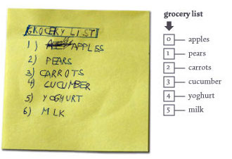
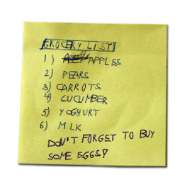
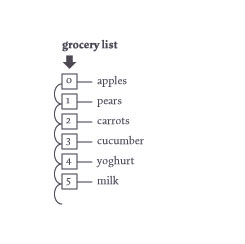
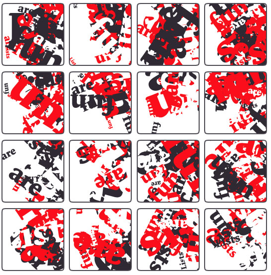

So far we've seen how Variables can hold single values like strings, numbers, or booleans. Python also offers a variety of ‘collections’ that allow you to group bits and pieces of information that belong together and store them in a single variable. The two collection types you're most likely to find useful are:
A list in PlotDevice is no different from a list in real life: it can hold a summary of stuff to do, groceries to buy, a sheet of names and adressess. The main difference is that in real life, we usually start counting from one, while lists in Python start from zero.
The first element in a list has index zero, the second element in a list has index one.

So, what would the code equivalent of our grocery list look like? Below we've defined it as a Python list object. The list is defined between square brackets. Each item in the list is a piece of text (a string) surrounded by quotes, and is separated from its neighbors by commas. The list is assigned to a variable named groceries, but we know that variables can have any name we like, so it could just as easily be named g or stufftodo.
groceries = ["apples", "pears", "carrots", "cucumber", "yoghurt", "milk"] print len(groceries) >>> 6
A list can contain any kind of data: strings, numbers, and even other lists. The len command returns the number of items in a list.
You can reference items in a list directly, by adding the index of the item you want to the variable name, between square brackets:
print groceries[0] >>> apples
groceries[3] = "banana" print groceries >>> ["apples", "pears", "carrots", "banana", "yoghurt", "milk"]
Don’t forget that items in a list start with index zero. That’s why in the above example the fourth element is replaced – the fourth element has index 3. You can also pull items from the end of the list by using negative index values to count backwards from the last item. The last element in a list is -1, the second-to-last is -2, and so on:
print "final item:", groceries[-1] print "penultimate:", groceries[-2] >>> final item: milk >>> penultimate: yoghurt
Data in a list can change over the course of time. New items can be added to it, or old items deleted from it, just like you can add stuff to buy to a grocery sticky-note, or scratch out things.
|  |
To append an item to the end of the list:
groceries.append("eggs")
print groceries
>>> ["apples", "pears",
>>> "carrots", "banana",
>>> "yoghurt", "milk",
>>> "eggs"]
To remove the eggs from the list:
del groceries[6] |
Items can be inserted halfway the list with the list.insert(i, item) command, where the i parameter is the position where you want the element to be.
Looping through a list is the same as going to the mall and working off your grocery list top to bottom: the first item to collect is apples, once you have those, you need to fetch pears, and so on.
Going through all the items in a list is one of the most essential things you do when working with data. You could retrieve the items in a list manually when there are only a few of them, but not when the list contains hundreds or even thousands of, for example, strings of text that you want to draw to the screen.
|  |
Using the for-loop:
for item in groceries:
print "buy some", item
>>> buy some apples
>>> buy some pears
>>> buy some carrots
>>> buy some banana
>>> buy some yoghurt
>>> buy some milk
>>> buy some eggs
|
In the above example, the indented command(s) below the for command are executed for each item in the list. The item variable consecutively contains each item in the list. After that, the loop ends. Note that using a "for … in" loop only gives you the values from the list. If you also need the index within the loop, use the convenient enumerate() command. It provides you with a series of index/value pairs, one for each item in the list:
shortlist = ['first', 'middle', 'last']
for i, name in enumerate(shortlist):
print "item", i, "is:", name
>>> item 0 is first
>>> item 1 is middle
>>> item 2 is last
You can let the code decide on its own which items to draw from the list by using the choice() command. Each time you call choice() it returns a randomly selected value from the list. Since each of these "choices" is independent, it's quite possible that you'll receive the same value more than once during a sequnce of calls.
If your goal is to reorder the items in a list while ensuring that each element only appears once, use the shuffled() command. Calling shuffled() doesn't actually modify the list you pass to it; instead it generates a new, permuted list with the same values as your original. You can store this permutation in another value, or iterate through it immediately:
alphabet = ['a','b','c','d']
print shuffled(alphabet)
>>> ['b', 'c', 'a', 'd']
for letter in shuffled(alphabet):
print letter
>>> a
>>> c
>>> d
>>> b
Here's a dead-simple example of how you would use random choice with small lists to generate compositions. The script has a list of words it can use, and a list of colors it can use. After that, the script is free to act on its own: it takes random words and colors from the two lists and draws them to the screen in random sizes and rotations. It retains a certain coherence between different runs because of its limited words and colors.
words = ["Lists", "are", "fun"]
colors = [color(1,0,0), color(1,1,1), color(0,0,0)]
for i in range(40):
x = random(WIDTH)
y = random(HEIGHT)
rotate(random(360))
fontsize(random(10,100))
fill(choice(colors))
text(choice(words), x, y)

There's a lot more you can do with lists, like sorting and reversing, retrieving a range of elements as a slice, or using functional-programming concepts like "map" and "filter" in a list comprehension. The Python tutorial on Datastructures will get you started with some of the more advanced features of the list object.
Dictionaries are an extremely versatile kind of list that lets you access elements via string indices, keys, that you define yourself. Each key is unique and references an item in the list. Dictionaries are created with curly braces instead of square brackets. You can assign and retrieve values from a dictionary using the same "index" syntax as for lists:
heading = {}
heading["family"] = "Avenir Next"
heading["size"] = 18
heading["fill"] = color(1,0,0)
print heading["size"]
print heading["fill"]
>>> 18
>>> Color('#f00')
You can also initialize a dictionary in a single step by defining the keys and values inside the curly braces. Note that unlike other languages with similar syntax (e.g., javascript), keys must be enclosed in quotes or they will be interpreted as variable names rather than strings. If this sounds like too much punctuation, consider using the dict() command which lets you specify keys through keyword arguments.
Here are two equivalent ways to create our heading dict in a single step:
heading = {
"family":"Avenir Next",
"size":18,
"fill":color(1,0,0)
}
heading = dict(family="Avenir Next", size=18, fill=color(1,0,0))
While the elements in a list have an implicit order, there's no obvious way to decide what the "next" element in a dictionary should be. Instead you can think of the dictionary as a soup of key/value pairs. To get a list of all the keys that have been added to a dictionary, use its keys() method. Note that the order of the keys has no relation to the order in which you defined them:
print heading.keys() >>> ["family", "fill", "size"] # even though we defined it with family, size, fill
If it's important for the key order to be preserved, you can use an odict (a.k.a. an Ordered Dictionary) object instead.
To test whether a particular key has been defined in a dict, use an "if … in" statement.
if "fill" in heading:
print "found fill!"
if "italic" not in heading:
print "italic not defined..."
>>> found fill!
>>> italic not defined...
It's important to be sure your dict has the expected keys since any attempt to read from an undefined key will crash your script with a KeyError exception:
print heading["italic"] >>> Traceback (most recent call last): >>> File "<stdin>", line 1, in <module> >>> KeyError: 'italic'
Undefined keys are actually a rather common occurrance, so having a missing value cause a fatal error is a little harsh. Luckily Python offers a way to read keys "safely" by using the dict.get() method. Call get() with a pair of arguments: the key name and a "default" value to be returned if the dictionary doesn't contain that key:
print "fam:", heading.get("family", "Helvetica") # key exists, default ignored
print "wgt:", heading.get("weight", "normal") # undefined, default used instead
>>> fam: Avenir Next
>>> wgt: normal
Dictionaries support the same "for … in" syntax as lists. But where list iteration steps through values, dict iteration steps through keys. Here we iterate through keys and manually retrieve the values from our dictionary:
for key in header:
print key, header[key]
>>> fill Color('#f00')
>>> family Avenir Next
>>> size 18
You can also iterate through key/value pairs using the dict.items() method. In this case your for statement should declare two variables (separated by a comma) to refer to the key and value respectively:
for key, val in header.items():
print key, val
The standard dictionary object provided by the built-in dict type will suit your needs the vast majority of the time. There are three dictionary variants that may also come in handy:
Consult the Reference entries for these types to learn when they're useful and what caveats apply to each.